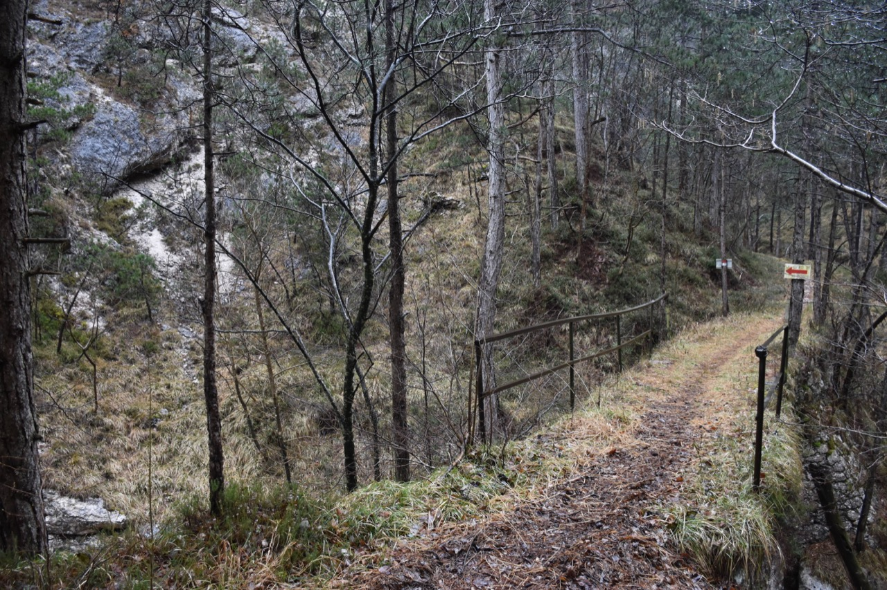
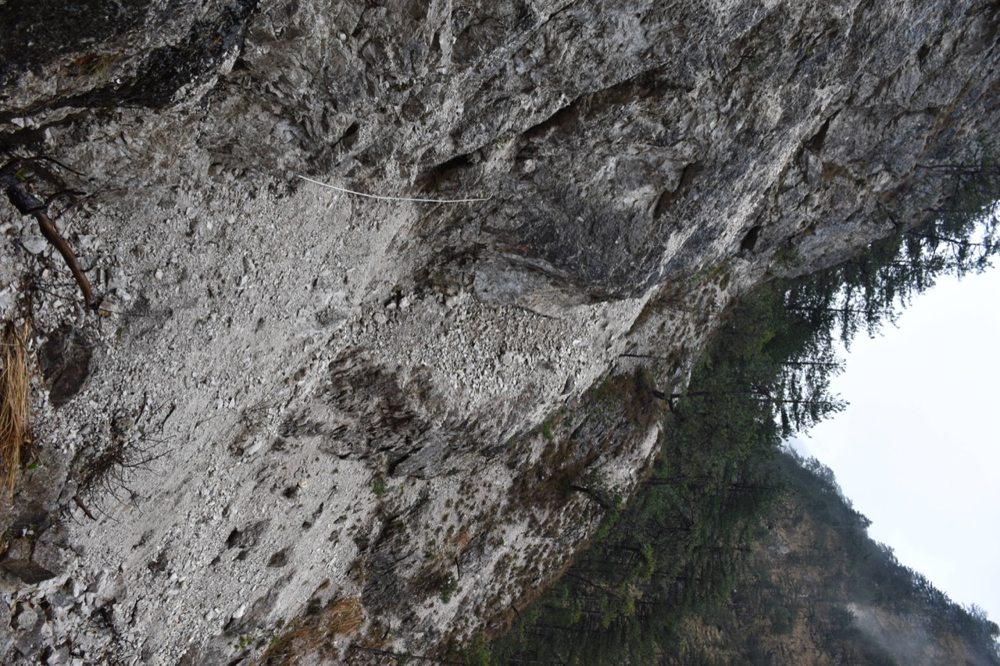
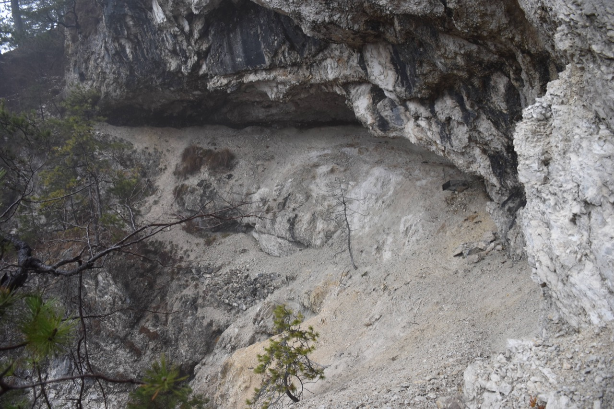
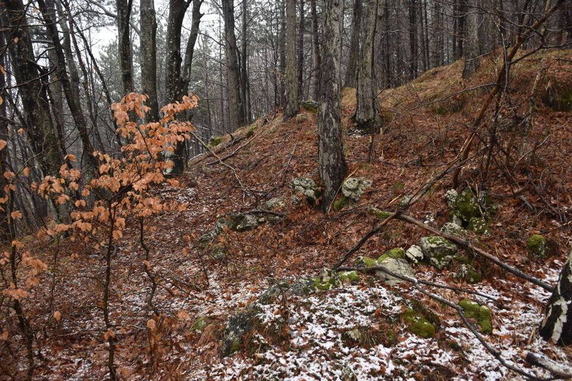
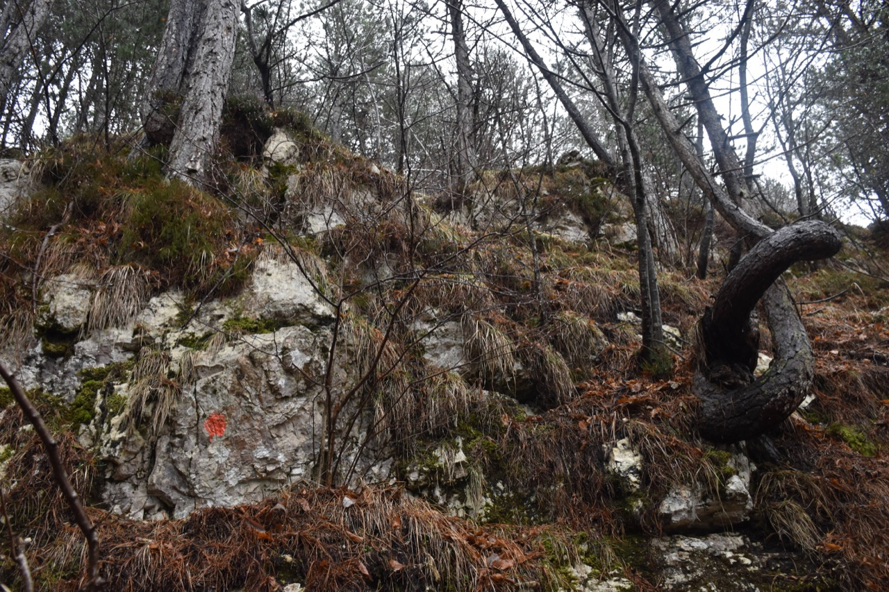
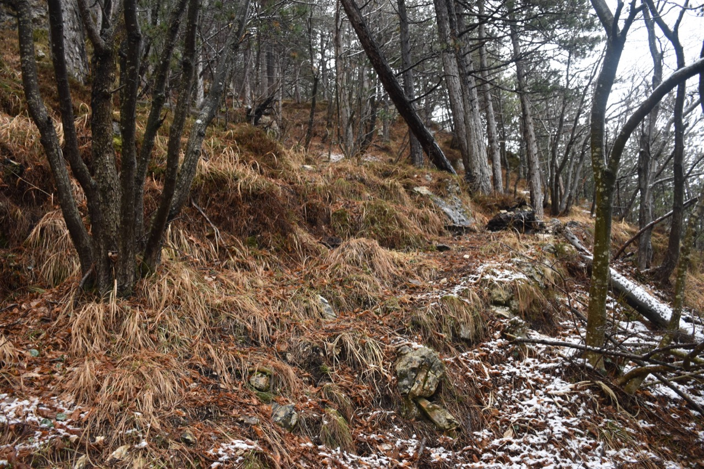
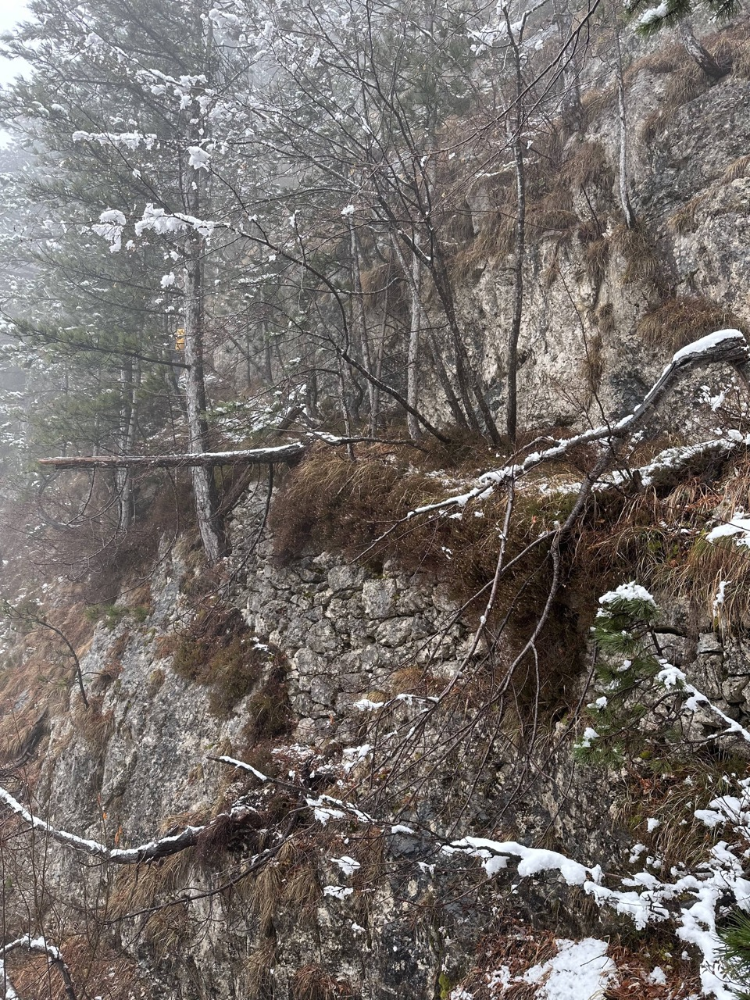

Pic di Babe
NUOVO
Anello da Raccolana
Il Moncussòn e lo Sflàmburc sono i contrafforti più occidentali del sottogruppo del Cimone, assieme al dirimpettaio Cuel da la Bareta; a differenza di quest'ultimo, i due monti in oggetto raramente ricevono visite: pochissimi quelli che transitano per forcella Galandìn (intendo la vera forcella, non la Via Alta che ci passa pochi metri sopra), passaggio da sempre ritenuto impegnativo.
Un tempo il Moncussòn era interamente prativo (notizie dal Marini-Galli), e sulle sue pendici ci sono vari sentieri ancora in discrete condizioni. Un giorno di marzo siamo andati a dare un'occhiata (gita con l'ombrello), anche in vista di qualche idea che l'anno prossimo mi piacerebbe sviluppare.
L'inizio, dopo il ponte sul rio Patoc, non potrebbe essere più evidente.
 Sulla bellissima cengia di collegamento fra le tracce che salgono da Sud e quella che sale dalla cascata di Cadramazzo (non più segnata sulle mappe).
Con tanto di clapusç!
Purtroppo, sia salendo al Moncussòn che salendo da quest'ultimo allo Sflàmburc, si alternano tratti in cui è sparita ogni traccia e tratti in cui invece questa è ancora evidente, grazie anche a muretti a secco.
In particolare dopo l'incrocio fra le tracce di cui parlavo prima, sembra essere sparita fra la lescje la traccia che sale verso il Moncussòn: noi siamo saliti per il crinale Nord-Ovest (guarda la Tabacco), dove abbiamo trovato rami piegati e tagli, ma non penso che fosse questo il sentiero originario.
Non distanti dalla cima, senza volerlo siamo sbucati sulla traccia di boscaioli che porta a Patoc.
Resistono ancora alcuni segni antropici; non sono però riportati sulle mappe.
Ci sono un bollo per il Moncussòn e un bollo per lo Sflàmburc (sic!).
Vicino alla cima del Moncussòn il sentiero passa a dx: me ne ero accorto intravedendo il muretto a secco che si vede bene nella foto, nonostante ci fossero delle fettucce a sx. È bene rimuovere le fettucce in discesa: se non si è sulla traccia vera, si fa solo un danno!
Con tempo da lupi arriviamo sul cimotto del Moncussòn, dove decidiamo di proseguire per lo Sflàmburc: la foto non rende, ma vi assicuro che questo muro a secco che sorregge la mulattiera, è monumentale! Stupendo anche il successivo tratto in cengia.
Il Moncussòn visto salendo allo Sflàmburc.
Peccato che dopo la cengia la mulattiera duri ben poco: è fuor di dubbio che noi abbiamo sbagliato qualcosa (stava nevicando e la neve copriva ogni traccia), ma comunque neppure in discesa abbiamo capito qual era la via giusta, perlomeno nella parte centrale.
Il versante Ovest dello Jovét visto dallo Sflàmburc.
Completamente zuppi e infreddoliti, di andare a forca Galandìn non ci è passato neppure per la testa: siamo tornati per la stessa via, eccetto per un tratto dove abbiamo seguito una traccia di animali verso Sud che ci ha fatto sbucare sulla traccia che lungamente scende a Patoc.